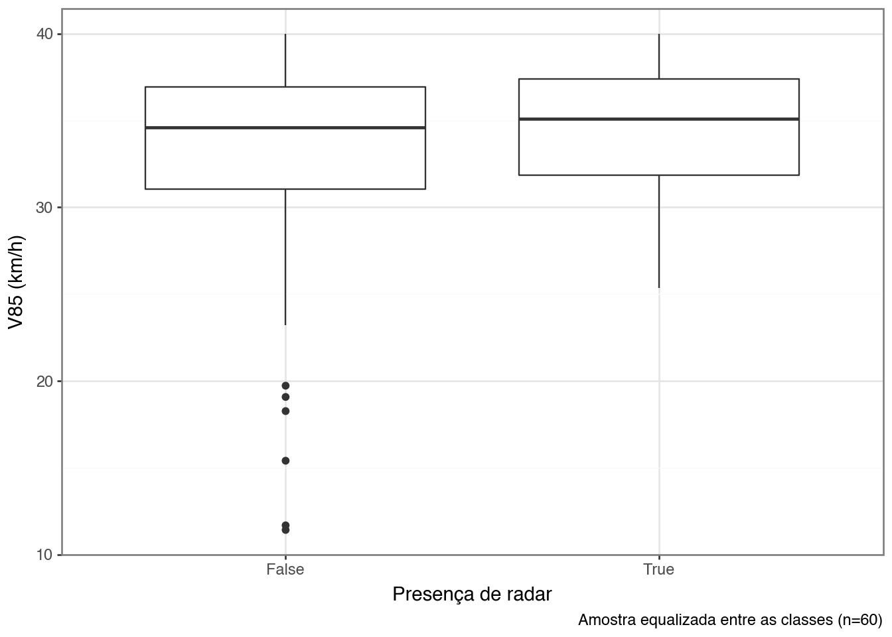

NDS-BR e velocidades inseguras em vias urbanas
Análise quantitativa
1 Introdução
2 Dados do NDS-BR
Para o cálculo da distribuição da velocidade nas vias de Curitiba, utilizou-se os dados do NDS-BR, que apresentam os dados de velocidade instantânea e a localização. O bloco a seguir apresenta a leitura dos dados e as colunas que identificam os condutores, as viagens, o local e a velocidade praticada.
Código
| driver | trip | long | lat | spd_kmh | |
|---|---|---|---|---|---|
| 0 | A | 2 | -49.2341 | -25.434755 | 0.1609 |
| 1 | A | 2 | -49.2341 | -25.434755 | 0.0000 |
| 2 | A | 2 | -49.2341 | -25.434757 | 0.1609 |
| 3 | A | 2 | -49.2341 | -25.434757 | 0.1609 |
| 4 | A | 2 | -49.2341 | -25.434757 | 0.1609 |
| 5 | A | 2 | -49.2341 | -25.434757 | 0.0000 |
| 6 | A | 2 | -49.2341 | -25.434757 | 0.0000 |
| 7 | A | 2 | -49.2341 | -25.434759 | 0.0000 |
| 8 | A | 2 | -49.2341 | -25.434759 | 0.0000 |
| 9 | A | 2 | -49.2341 | -25.434759 | 0.0000 |
2.1 Amostra utilizada
Código
n_drivers = ndsbr_sample['driver'].nunique()
driven_hours = len(ndsbr_sample) / 3600
n_trips = ndsbr_sample['id'].nunique()
trip_per_driver = ndsbr_sample.groupby('driver')['trip'].nunique()
min_trip = trip_per_driver.min()
max_trip = trip_per_driver.max()
mean_trip = trip_per_driver.mean()
first_trip = ndsbr_sample['date'].dropna().min()
last_trip = ndsbr_sample['date'].dropna().max()Código
ndsbr_geo = gpd.GeoDataFrame(
ndsbr_sample,
geometry=gpd.points_from_xy(ndsbr_sample['long'], ndsbr_sample['lat'],
crs = 'epsg:4326')
)
ndsbr_geo_utm = ndsbr_geo.to_crs('31982')
dist_between_points = ndsbr_geo_utm.distance(ndsbr_geo_utm.shift(-1))
ndsbr_dist = pd.concat(
[ndsbr_geo_utm, dist_between_points],
axis=1
).reset_index(drop=True)
ndsbr_dist.rename(columns={0:'dist'}, inplace=True)
ndsbr_dist['time'] = pd.to_datetime(ndsbr_dist['time'], format = '%H:%M:%S')
ndsbr_dist['delta_time'] = ndsbr_dist['time'] - ndsbr_dist['time'].shift(1)
ndsbr_dist['delta_time'] = ndsbr_dist['delta_time'].apply(
lambda x: x.total_seconds()
)
ndsbr_valid_dist = ndsbr_dist.query('delta_time == 1')
total_dist = ndsbr_valid_dist['dist'].sum() / 1000A amostra do NDS-BR inclui 48 condutores, com 661.81 horas de viagem ao total. Todos os condutores fizeram 2030 viagens. A quantidade mínima de viagens por condutor foi 3 e a máxima foi 118. A média das viagens por condutor foi 42. A distância percorrida por todos os condutores na amostra foi de 14316.81 km. Em média, cada condutor percorreu 298.27 km.
2.2 Distribuição da velocidade praticada
Como observado na Figura 1, boa parte das velocidades praticadas dentro da amostra estão abaixo da velocidade de 5 km/h, incluindo os momentos em que os veículos também estavam parados no trânsito (0 km/h). Outros grupos que se destacam são aqueles entre 30 e 40 km/h.
Código
Ao considerar as velocidades maiores que 5 km/h, a distribuição da velocidade praticada fica com uma curva mais concentrada, conforme demonstrado em Figura 2. Para os cálculos seguintes deste trabalho, serão consideradas apenas as velocidades acima de 5 km/h
Código
3 Velocidades nas vias de Curitiba
O processo de cálculo das velocidades nas vias de Curitiba inicia com a importação dos eixos de via, fornecidos pelo IPPUC1. A Figura 3 apresenta um mapa dessas vias.
Código
# Calculate the extension of the network using geopandas
dist_vias = vias.length.sum() / 1000
ndsbr_nearest = gpd.sjoin_nearest(
ndsbr_valid_speed,
vias,
how='left',
max_distance=20
)
v85_spd = ndsbr_nearest.groupby('CHAVE')['spd_kmh'].quantile(0.85).reset_index()
vias_v85 = pd.merge(vias, v85_spd, how='left', on='CHAVE')
# Filter vias_v85 where spd_kmh is not NaN
vias_v85_valid = vias_v85.dropna(subset=['spd_kmh'])
dist_vias_sample = vias_v85_valid.length.sum() / 1000A malha de eixos viários de Curitiba apresenta uma extensão total de 4533.38 km. Ao considerar apenas as vias com a amostra do NDS-BR em velocidades acima de 5 km/h, a extensão das vias de Curitiba fica de 2078.41 km. A Figura 4 apresenta a incidência de V85 nas vias de Curitiba. Pouco mais de 700 km de vias de Curitiba apresentam V85 entre 40 e 50 km/h, sendo o intervalo com o maior valor.
Código
# Transform spd_kmh into discrete values
vias_v85_valid['spd_kmh_cat'] = pd.cut(
vias_v85_valid['spd_kmh'],
[0, 10, 20, 30, 40, 50, 60, 70, 80, 90, 100, 110, 120],
labels=[0, 10, 20, 30, 40, 50, 60, 70, 80, 90, 100, 110]
)
vias_v85_valid['dist'] = vias_v85_valid.geometry.length
tbl_v85_dist = vias_v85_valid.groupby('spd_kmh_cat')['dist'].sum() / 1000
tbl_v85_dist = tbl_v85_dist.to_frame().reset_index()
tbl_v85_dist['dist'] = tbl_v85_dist['dist'].astype('float')Código
Por fim, a Figura 5 apresenta as vias locais, coletoras e arteriais, que serão utilizadas como amostra do estudo. Ao remover as vias de trânsito rápido, resta uma extensão de 1995.78 quilômetros de vias.
Código
Código
4 Fiscalização eletrônica
- Quantidade de radares por tipo
- Mapeamento dos radares
Código
5 Análise combinada da velocidade com os radares
- Existe uma diferença significativa de v85 entre as vias que tem radar e as que não tem radar?
- Quais trechos de via deveriam ter radar e não tem?
- Regressão logística
- Presença de radar x velocidade v85
- Igualizar a amostra entre as classes (com e sem radar)
- Comparação:
- via de alta velocidade com radar x via de alta velocidade sem radar
- via de baixa velocidade com radar x via de baixa velocidade sem radar
- Limiar da velocidade insegura: 40 km/h
Código
radar_vias = gpd.sjoin_nearest(
radar_vel,
vias_valid_hierarquia[['CHAVE', 'geometry']],
how='left',
max_distance=20
).dropna()
radar_vias_count = radar_vias['CHAVE'].value_counts().to_frame().reset_index()
# if count > 1, presenca_radar is true
radar_vias_count['presenca_radar'] = radar_vias_count['count'].apply(
lambda x: True if x >= 1 else False
)
vias_radares = pd.merge(
vias_valid_hierarquia,
radar_vias_count,
how='left',
on='CHAVE'
)
vias_radares['presenca_radar'] = vias_radares['presenca_radar'].fillna(False)Código
random.seed(123)
n_com_radar = vias_radares.query('presenca_radar == True').shape[0]
# Criar um df só com vias com radar
vias_com_radar = vias_radares.query('presenca_radar == True')
# Criar uma amostra aleatoria só de vias sem radar
vias_sem_radar = vias_radares.query(
'presenca_radar == False'
).sample(n_com_radar)
# Unir as amostras
vias_radares_sample = pd.concat([vias_com_radar, vias_sem_radar])
(
ggplot(vias_radares_sample, aes(x='presenca_radar', y='spd_kmh'))
+ geom_boxplot(aes(fill='presenca_radar'))
+ theme_bw()
+ labs(
x='Presença de radar',
y='V85 (km/h)',
caption=f'Amostra equalizada entre as classes (n = {n_com_radar})'
)
+ theme(legend_position='none')
)Código
Código
n_radar_seguro = vias_radares.query('presenca_radar == True & tipo_spd == "segura"').shape[0]
# Criar um df só com vias com radar
vias_com_radar_seguro = vias_radares.query('presenca_radar == True & tipo_spd == "segura"')
# Criar uma amostra aleatoria só de vias sem radar
random.seed(42)
vias_sem_radar_seguro = vias_radares.query(
'presenca_radar == False & tipo_spd == "segura"'
).sample(n_radar_seguro)
# Unir as amostras
vias_seguro_sample = pd.concat([vias_com_radar_seguro, vias_sem_radar_seguro])
(
ggplot(vias_seguro_sample)
+ geom_boxplot(aes(x='presenca_radar', y='spd_kmh'))
+ theme_bw()
+ labs(x='Presença de radar', y='V85 (km/h)', caption=f'Amostra equalizada entre as classes (n={n_radar_seguro})')
)
Código
Código
def filter_vias_semradar(df: pd.DataFrame, n: int) -> pd.DataFrame:
df = df.query(f'presenca_radar == False & spd_kmh > {n}')
return df
def plot_vias_semradar(df: pd.DataFrame, df_vias: pd.DataFrame, n: int):
plot = (
ggplot()
+ geom_map(df_vias, color='#dbdbdb', size=0.3)
+ geom_map(df, color='#f05f22', size=0.4)
+ theme_bw()
+ coord_equal()
+ labs(title=f'V85 > {n} km/h')
)
return plot
plot_vias_semradar(filter_vias_semradar(vias_radares, 40), vias, 40)
plot_vias_semradar(filter_vias_semradar(vias_radares, 50), vias, 50)
plot_vias_semradar(filter_vias_semradar(vias_radares, 60), vias, 60)Código
fig, ax = plt.subplots(1, 3, figsize=(12, 4))
vias.plot(ax=ax[0], color='#dbdbdb', linewidth=0.3)
vias.plot(ax=ax[1], color='#dbdbdb', linewidth=0.3)
vias.plot(ax=ax[2], color='#dbdbdb', linewidth=0.3)
filter_vias_semradar(vias_radares, 40).plot(ax=ax[0], color='#f05f22', linewidth=0.4)
filter_vias_semradar(vias_radares, 50).plot(ax=ax[1], color='#f05f22', linewidth=0.4)
filter_vias_semradar(vias_radares, 60).plot(ax=ax[2], color='#f05f22', linewidth=0.4)
ax[0].set_title('V85 > 40 km/h')
ax[1].set_title('V85 > 50 km/h')
ax[2].set_title('V85 > 60 km/h')
plt.show()Notas de rodapé
https://ippuc.org.br/geodownloads/SHAPES_SIRGAS/EIXO_RUA_SIRGAS.zip↩︎